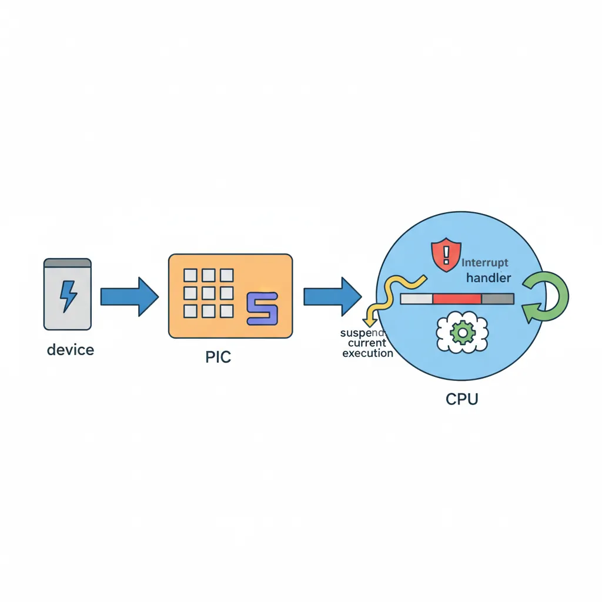
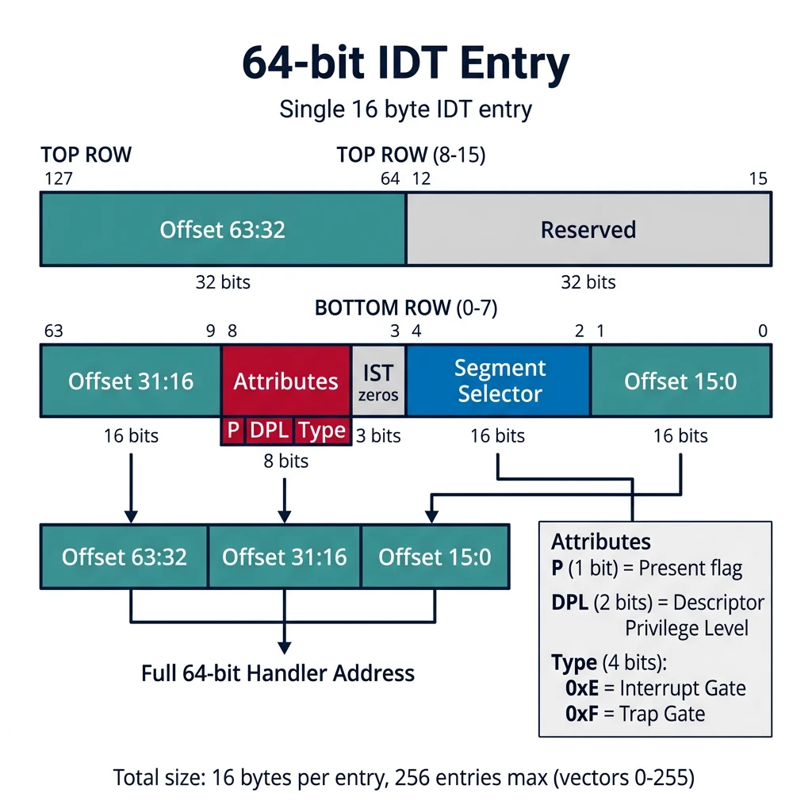
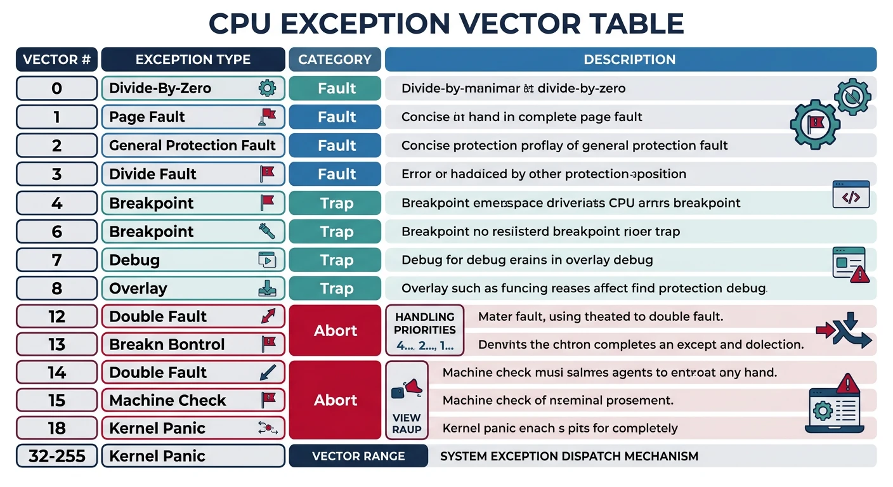
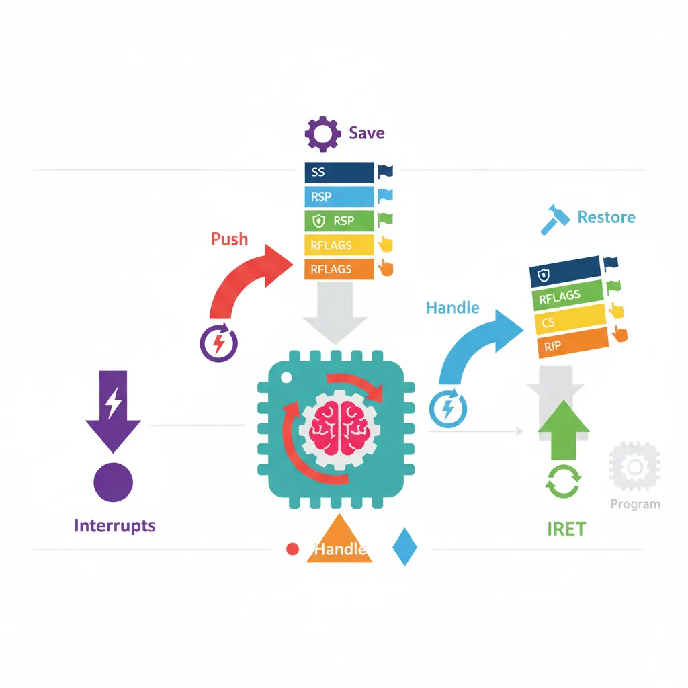

x86 Assembly Series Part 13: System Calls & Interrupts
February 6, 2026Wasil Zafar35 min read
Master system calls (syscall, int 0x80) for Linux/Windows kernel interaction, understand hardware and software interrupts, the Interrupt Descriptor Table (IDT), and exception handling in x86.
User → Kernel Transition: System calls are the interface between user-space programs and the kernel. They're the only safe way to request OS services (I/O, memory allocation, process control).
; 32-bit Linux: int 0x80
; EAX=syscall, EBX=arg1, ECX=arg2, EDX=arg3
mov eax, 4 ; sys_write
mov ebx, 1 ; stdout
mov ecx, msg ; buffer
mov edx, len ; length
int 0x80 ; invoke kernel
mov eax, 1 ; sys_exit
xor ebx, ebx ; status 0
int 0x80
Interrupts Overview
Hardware Interrupts (IRQs)
Hardware interrupts (Interrupt Requests) are signals from devices like keyboards, timers, and disk controllers:

Hardware interrupts flow from device → PIC (Programmable Interrupt Controller) → CPU, which suspends current execution to run the interrupt handler
IRQ
Vector
Device
IRQ0
0x20
System Timer (PIT)
IRQ1
0x21
Keyboard
IRQ2
0x22
Cascade (slave PIC)
IRQ8
0x28
Real-Time Clock
IRQ12
0x2C
PS/2 Mouse
IRQ14
0x2E
Primary ATA (Hard Drive)
; Enable/disable hardware interrupts
sti ; Set Interrupt Flag - enable interrupts
cli ; Clear Interrupt Flag - disable interrupts
; Acknowledge interrupt to PIC (8259)
mov al, 0x20 ; End of Interrupt command
out 0x20, al ; Send to master PIC
; If IRQ >= 8:
out 0xA0, al ; Also send to slave PIC
Software Interrupts
The INT n instruction triggers interrupt vector n explicitly:
; Common software interrupts
int 0x80 ; Linux system call (32-bit)
int 0x10 ; BIOS video services (real mode)
int 0x13 ; BIOS disk services (real mode)
int 0x16 ; BIOS keyboard services (real mode)
int 0x21 ; DOS function call
int 0x03 ; Debugger breakpoint
; BIOS example (real mode): Print character
mov ah, 0x0E ; Teletype output function
mov al, 'A' ; Character to print
int 0x10 ; Call BIOS video interrupt
Modern Systems: BIOS interrupts only work in real mode. In protected/long mode, use system calls (syscall) instead.
Interrupt Descriptor Table (IDT)
The IDT maps interrupt vectors (0-255) to handler addresses. Each entry is 8 bytes (32-bit) or 16 bytes (64-bit):

Each 16-byte IDT entry in 64-bit mode contains the handler's 64-bit offset split across three fields, a code segment selector, and gate type/DPL attributes
IDT Entry Routing
graph TD
HW["Hardware IRQ (Timer, Keyboard, Disk)"]
SW["Software Interrupt (INT n instruction)"]
EX["CPU Exception (#DE, #PF, #GP, #DF)"]
HW --> PIC["PIC / APIC maps IRQ to vector"]
SW --> VEC["Vector Number (0-255)"]
EX --> VEC
PIC --> VEC
VEC --> IDT["IDT Lookup idtr → base + vector × 16"]
IDT --> GATE{"Gate Type?"}
GATE -->|"Interrupt Gate"| IG["Clear IF flag → ISR Handler"]
GATE -->|"Trap Gate"| TG["Keep IF flag → Exception Handler"]
GATE -->|"Task Gate"| TSK["Hardware Task Switch (Legacy)"]
style HW fill:#e8f4f4,stroke:#3B9797
style SW fill:#f0f4f8,stroke:#16476A
style EX fill:#fff5f5,stroke:#BF092F
style IDT fill:#132440,stroke:#132440,color:#fff
IDT Entry (64-bit Long Mode):
┌───────────────┬───────────────┬───────────────┬───────────────┐
│ Offset 63:32 │ Reserved │ │ │
├───────────────┼───────────────┼───────────────┼───────────────┤
│ Offset 31:16 │ Attr/Type │ Selector │ Offset 15:0 │
└───────────────┴───────────────┴───────────────┴───────────────┘
Type (4 bits): 0xE = Interrupt Gate, 0xF = Trap Gate
DPL (2 bits): Privilege level required to call via INT instruction
CPU exceptions are synchronous interrupts triggered by instruction execution errors:

CPU exceptions are classified as faults (restartable), traps (reported after execution), or aborts (unrecoverable) — vectors 0–31 are reserved by Intel
Vector
Name
Cause
Error Code?
0 (#DE)
Divide Error
DIV/IDIV by zero
No
1 (#DB)
Debug
Debug exception
No
3 (#BP)
Breakpoint
INT 3 instruction
No
6 (#UD)
Invalid Opcode
Undefined instruction
No
8 (#DF)
Double Fault
Exception during exception
Yes (always 0)
13 (#GP)
General Protection
Segment/privilege violation
Yes
14 (#PF)
Page Fault
Page not present/protected
Yes
Page Fault (Vector 14): When #PF occurs, CR2 contains the faulting virtual address. The error code indicates read/write, user/supervisor, present bit, etc.
; Page Fault error code bits:
; Bit 0 (P) : 0=non-present page, 1=protection violation
; Bit 1 (W/R): 0=read access, 1=write access
; Bit 2 (U/S): 0=supervisor mode, 1=user mode
; Bit 3 (RSVD): 1=reserved bit set in page entry
; Bit 4 (I/D) : 1=instruction fetch
Writing Interrupt Handlers
Interrupt handlers must save state, handle the interrupt, and return with iret:

Interrupt handlers follow a strict save-handle-restore-IRET pattern — the CPU automatically pushes SS, RSP, RFLAGS, CS, and RIP before entering the handler
; Interrupt handler template (64-bit)
; For exceptions WITH error code (e.g., #GP, #PF)
gp_fault_handler:
; CPU pushed: SS, RSP, RFLAGS, CS, RIP, Error Code
push rax ; Save registers we'll use
push rbx
push rcx
push rdx
push rsi
push rdi
push rbp
push r8
push r9
push r10
push r11
; Get error code (at RSP + 88 after our pushes)
mov rdi, [rsp + 88] ; Error code as first parameter
; Call C handler (if available)
; extern gp_fault_c_handler
; call gp_fault_c_handler
; Display error and halt (simple handler)
; ... panic code here ...
; Restore registers
pop r11
pop r10
pop r9
pop r8
pop rbp
pop rdi
pop rsi
pop rdx
pop rcx
pop rbx
pop rax
add rsp, 8 ; Remove error code from stack
iretq ; Return from interrupt (64-bit)
; Divide by zero handler (no error code)
div_error_handler:
; Save all registers
push rax
; ... save more as needed ...
; Handle the error (print message, terminate program, etc.)
; ... restore registers ...
pop rax
iretq
Exercise: Simple Keyboard Handler
; IRQ1 Keyboard interrupt handler
keyboard_handler:
push rax
in al, 0x60 ; Read scan code from keyboard
; Store scancode somewhere for later processing
mov [last_scancode], al
; Send EOI to PIC
mov al, 0x20
out 0x20, al
pop rax
iretq